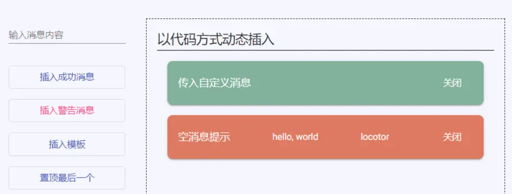

Angular中常用Ref总结
ApplicationRef
两个主要个作用：
（1）可以通过appRef.tick()来全局性调用变化检测；
ApplicationRef.tick() - 检查所有组件树
（2）可以将视图用attachView()包含到变化检测中 用detachView()将视图移除变化检测 ；
不用ViewContainerRef，动态插入一个组件到一个特定的DOM节点：
ComponentRef
表示组件的实例。
ComponentRef提供对组件实例的访问以及与此组件实例相关的其他对象，并允许您通过destroy方法销毁组件实例。
抽象类定义如下：
1 | abstract class ComponentRef<C> { |
injector: Injector
我们在使用一个命令式引导一个Component之前需要在NgModule中的declarations部分声明这个Component，在使用这个Component时，通过依赖注入为Component提供的Service实际上是在NgModule声明，并且由NgModule提供的——NgModule就是Injector。
所以这个Injector一般就是你在使用这个Component时所在的NgModule。
总结一句话，就是在动态加载Component时，你需要在哪个宿主（Component Host）下工作，那就获取哪个宿主的Injector，让宿主的Injector为你提供服务（provide service）。
location: ElementRef
这个命名很容易让人困惑。实际上它是需要被动态加载的组件（Component）的视图（View）部分。它的其中一个属性叫做rootNodes，就是一个Native Element。
hostView: ViewRef
上面已经存在一个ElementRef是为了提供视图的，而这个ViewRef看起来更像是视图的引用。没错，这很容易混淆。实际上ViewRef是用来提供数据检测和视图更新的。我们来看一下ViewRef的定义。
这三个部分就是一个Component最重要的组成部分：injector提供服务，location管理原生视图，hostView负责数据-视图更新。
TemplateRef
在介绍 TemplateRef 前，我们先来了解一下 HTML 模板元素template。模板元素是一种机制，允许包含加载页面时不渲染，但又可以随后通过 JavaScript 进行实例化的客户端内容。我们可以将模板视作为存储在页面上稍后使用的一小段内容。
用于表示内嵌的template模板元素，通过TemplateRef实例，我们可以方便的创建内嵌视图（Embedded Views），且可以轻松地访问到通过 ElementRef 封装后的 nativeElement。需要注意的是组件视图中的 template 模板元素，经过渲染后会被替换成 comment 元素。
1 | abstract class TemplateRef<C> { |
templateRef创建Embedded Views视图的方法如下：
1 |
|
ViewContainerRef
动态视图的核心是视图容器，它决定了视图的插入位置，用 ViewContainerRef 类表示。要创建它很简单，假设组件视图中有：<ng-container #dynamicHost></ng-container> 通过 @ViewChild 装饰器读取即可：
1 | @ViewChild('dynamicHost', { read: ViewContainerRef }) container!: ViewContainerRef; |
这段代码的注意点有：
@ViewChild用来从组件视图中获取元素的引用，可以是 DOM 对象、子组件或者指令的实例、或是某个依赖注入的 Provider。- 第二个参数中的 read 指示具体获取哪个类型，例如从
<button mat-button>可以获取到这个 button 元素对象，也可以是这个标签上添加的 Material 按钮指令。 - 要获取一个容器，并非只能使用
<ng-container>，<ng-template>、组件或者别的 DOM 标签都可以。 - 虽然是叫容器，不过插入的内容可不是在这个
<ng-container>标签内，而是在它的下方（类似<router-outlet>）。所以使用ng-container是为了不渲染多余的 DOM。
ViewContainerRef 实例可以创建、插入、移除、移动或是销毁它其中的视图（ViewRef）。视图代表着 Angular中可显示元素的最小分组单位，它由组件或者模板定义。多个视图构造成了 Angular 应用的视图树。
简明起见，后文都将 ViewContainerRef 实例称之为 “视图容器”
以代码方式插入
视图容器有两个方法（createComponent，createEmbeddedView），用来动态创建组件视图和模板视图。
动态插入组件
1 | ({ |
这个组件有两个输入属性，一个输出事件。以便演示动态创建的组件，如何和外界交互。
通知组件写好后，就可以创建并动态插入，将这个对象传入视图容器的 createComponent 方法。通过 createComponent 方法，就可以将这个组件插入到视图中了，并返回这个组件实例。
有了组件实例，和这个通知组件交互也就不成问题了：
- 输入属性传值：componentRef.instance.message = “外部传入的警告信息”。
- 绑定输出事件：
1 | componentRef.instance.closeAlert.subscribe(() => { |

动态插入模板
和 createComponent 类似的，通过 createEmbeddedView 就可以插入模板。
首先先创建一个模板示例，这个模板根据上下文对象声明了一个 “param” 属性：
1 | <ng-template #templateView let-param="message"> |
要插入一个带上下文数据的模板，具体分为三步：
获取模板的引用对象：
@ViewChild('templateView', { read: TemplateRef }) template!: TemplateRef<any>;声明上下文对象：
templateContext = { message: '来自模板上下文的值' };
通过视图容器的 createEmbeddedView 方法插入模板：
const embeddedViewRef = this.container.createEmbeddedView(this.template, this.templateContext);
方法创建一个 EmbeddedViewRef 对象，并将它放入。通过这个对象，视图容器可以查找它的索引，所以也可以和之前组件视图的引用一样，在容器内移动顺序、移除渲染、或是被销毁。

以指令方式插入
除了使用视图容器的两个方法来创建和插入视图，Angular 还提供了两个指令来简化工作。
ngComponentOutlet
首先，再创建另一个示例组件，和前面的哪个通知组件不同，它没有输入输出属性，但是多了一个需要注入的依赖项，以便演示带依赖注入的组件插入：
1 | @Component({ |
使用指令的方式创建组件就简单多了，只需要两步：
引入这个组件类，并赋值给一个属性：
1
2
3
4import { AnotherComponent } from '../shared/another-component';
export class ViewContainerExampleComponent implements OnInit, OnDestroy {
public anotherComponent = AnotherComponent;
}在视图中声明即可：
1 | <ng-container *ngComponentOutlet="anotherComponent"></ng-container> |
传入依赖注入器
正常情况下，这样就把组件插入指定位置了，不过如果动态组件所声明的依赖项，需要由这个组件本身提供呢？
这里就要再给这个组件传入注入对象:
1 | <ng-container *ngComponentOutlet="anotherComponent;injector:costumeInjector"> |
这个 costumeInjector 可以通过 Injector 类的静态方法创建：
1 |
|
这样一来，每个动态创建的组件，都会拥有一个独立的 ExampleService 实例。
✨ 视图容器的 createComponent 方法同样可以指定依赖注入器，效果是一样的，前面只是为了简明而省略。
当然，常见的情况依旧是给 ExampleService 的装饰器声明为全局服务：@Injectable({ providedIn:’root’})
传入内容映射
除了可以指定注入器，还可以传入内容映射。
先给组件做一点小修改，新增一个
1 |
|
要插入映射的 DOM 内容，只需要额外给指令的表达式再传一个参数：<ng-container *ngComponentOutlet="anotherComponent;content:costumeContent">
这个 costumeContent 是一个数组，因为组件内可以有多个 ng-content。数组内每项也是一个数组，因为每个 ng-content 位置，可以插入多个 DOM 内容块。
1 | const spanContent = document.createElement('span'); |
ngTemplateOutlet
模板的指令只有两个输入属性：模板的引用对象、模板的上下文对象。
所以要插入一个带上下文数据的模板，具体步骤如下：
- 给模板添加引用名：
1 | <ng-template #templateView let-param="message"> |
- 声明上下文对象：
templateContext = { message: '来自模板上下文的值' }; - 传入 ngTemplateOutlet 指令中：
1 | <ng-container *ngTemplateOutlet="templateView; context: templateContext"></ng-container> |
ElementRef
Angular 的口号是 - “一套框架，多种平台，即同时适用手机与桌面。在应用层直接操作 DOM，就会造成应用层与渲染层之间强耦合，导致我们的应用无法运行在不同环境，通过 ElementRef 我们就可以封装不同平台下视图层中的 native 元素 (在浏览器环境中，native 元素通常是指 DOM 元素)，最后借助于 Angular 提供的强大的依赖注入特性，我们就可以轻松地访问到 native 元素。
ElementRef定义如下：
1 | class ElementRef<T> { |
ViewRef
抽象类定义：
1 | abstract class ViewRef extends ChangeDetectorRef { |
ViewRef 用于表示 Angular View(视图)，视图是可视化的 UI 界面。EmbeddedViewRef 继承于 ViewRef，用于表示 模板元素中定义的 UI 元素。